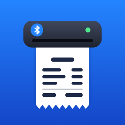

Print Buy Set
Print Buy Set prints photos, screenshots, PDFs and simple receipts on Bluetooth thermal receipt printers (58 mm and 80 mm), straight from the app or from the iOS share sheet.
Contact
Email bhumsonj@gmail.com. We usually reply within two working days.
Which printers work?
Printers that use Bluetooth Low Energy (BLE) and the ESC/POS command set, which covers most portable and desktop receipt printers sold for shops and delivery riders.
Not supported: printers that only have classic Bluetooth (iOS doesn't allow apps to use it without special certification), and “cat” sticker printers that use their own protocol.
Common questions
The app doesn't find my printer
Turn the printer on and keep it close to the iPhone. If it's paired in iPhone Settings › Bluetooth, choose “Forget This Device” there and connect from the app's Printer tab instead. Try turning on “Show unnamed devices”.
Printing from the share sheet can't reach the printer
Most printers accept only one Bluetooth connection at a time. The app lets go of the printer when you leave it, but if another phone or app is connected, disconnect it first. If the share sheet still can't connect, tap “Print with the Print Buy Set app”.
The print is cut off, garbled or stops halfway
The printer's memory is overflowing. In Settings › Transfer, turn on Reliable mode, or lower the packet size, or raise the delay between packets.
Text is too faint or too dark
Move the Threshold slider (higher prints darker) or the Brightness slider before printing. You can set the starting values in Settings › Image defaults.
Free prints and unlimited printing
The app includes 100 free prints. After that, a one-time purchase unlocks unlimited printing; there is no subscription. If you reinstall the app or get a new iPhone, open Settings › Restore Purchase.
ภาษาไทย
ปริ้นใบเสร็จ (Print Buy Set) พิมพ์รูป สกรีนช็อต ไฟล์ PDF และใบเสร็จอย่างง่าย ออกเครื่องพิมพ์ใบเสร็จความร้อนผ่านบลูทูธ (กระดาษ 58 และ 80 มม.) ได้ทั้งจากในแอปและจากปุ่มแชร์ของ iPhone
ติดต่อ
อีเมล bhumsonj@gmail.com ปกติตอบกลับภายใน 2 วันทำการ
ใช้กับเครื่องพิมพ์รุ่นไหนได้บ้าง
เครื่องพิมพ์ที่เชื่อมต่อแบบ Bluetooth Low Energy (BLE) และรองรับคำสั่ง ESC/POS ซึ่งเป็นเครื่องพิมพ์ใบเสร็จแบบพกพาและแบบตั้งโต๊ะส่วนใหญ่ที่ใช้ในร้านค้าและไรเดอร์ ไม่รองรับเครื่องที่มีแต่บลูทูธแบบเก่า (Classic) และเครื่องพิมพ์สติกเกอร์ “แมว” ที่ใช้โปรโตคอลเฉพาะ
แอปหาเครื่องพิมพ์ไม่เจอ
เปิดเครื่องพิมพ์และวางไว้ใกล้ iPhone ถ้าเคยจับคู่ไว้ในการตั้งค่า › บลูทูธ ให้กด “ลืมอุปกรณ์นี้” แล้วเชื่อมต่อจากแท็บ Printer ในแอปแทน
พิมพ์จากปุ่มแชร์แล้วเชื่อมต่อเครื่องพิมพ์ไม่ได้
เครื่องพิมพ์ส่วนใหญ่เชื่อมต่อได้ทีละเครื่อง ถ้ามีโทรศัพท์หรือแอปอื่นเชื่อมอยู่ให้ตัดการเชื่อมต่อก่อน หรือกด “Print with the ปริ้นใบเสร็จ app” เพื่อพิมพ์ผ่านแอป
พิมพ์ออกมาขาด เพี้ยน หรือหยุดกลางคัน
ไปที่ Settings › Transfer แล้วเปิด Reliable mode หรือลดขนาด packet หรือเพิ่ม delay
พิมพ์ฟรีและการปลดล็อกพิมพ์ไม่จำกัด
แอปพิมพ์ได้ฟรี 100 ครั้ง หลังจากนั้นจ่ายครั้งเดียวเพื่อพิมพ์ได้ไม่จำกัด ไม่มีค่าสมาชิกรายเดือน ถ้าลบแอปแล้วติดตั้งใหม่หรือเปลี่ยน iPhone ให้กด Settings › Restore Purchase